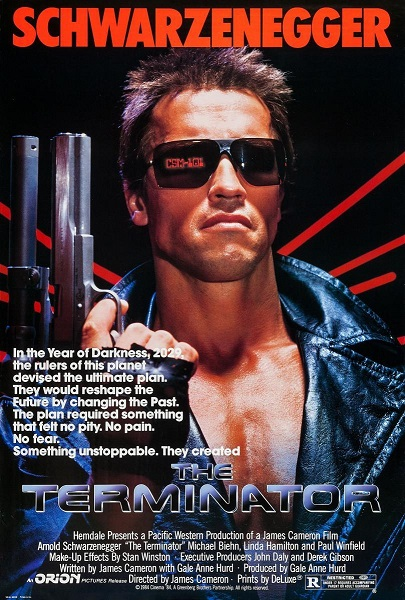

Inicio
The Terminator es una película estadounidense de ciencia ficción y acción de 1984, dirigida por James Cameron, coescrita entre Cameron, Gale Anne Hurd y William Wisher Jr. y protagonizada por Arnold Schwarzenegger, Linda Hamilton y Michael Biehn.
El filme fue producido por Hemdale Film Corporation y distribuido por Orion Pictures.
La película fue estrenada el 20 de octubre de 1984 y fue un gran éxito de taquilla que dio inicio a una franquicia que consta de varias secuelas, una serie de televisión, cómics, novelas y videojuegos.
En 2008 la Biblioteca del Congreso de los Estados Unidos seleccionó la película para su preservación en el National Film Registry encontrándola "culturalmente, históricamente, o estéticamente significativa".
